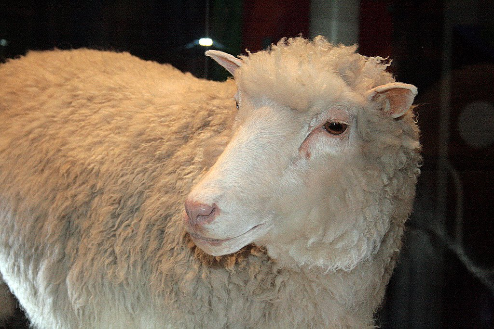
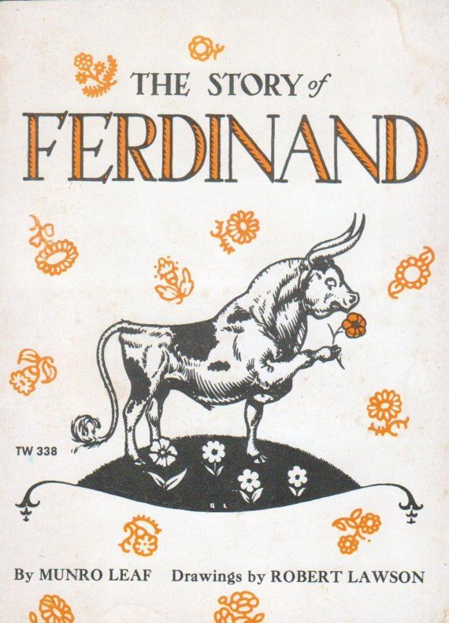
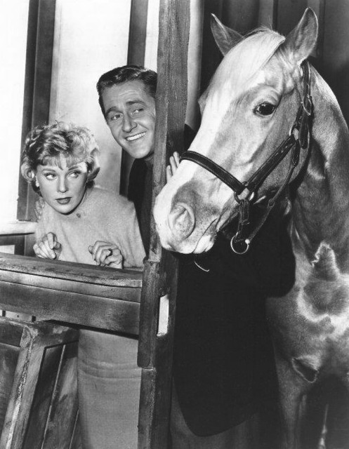
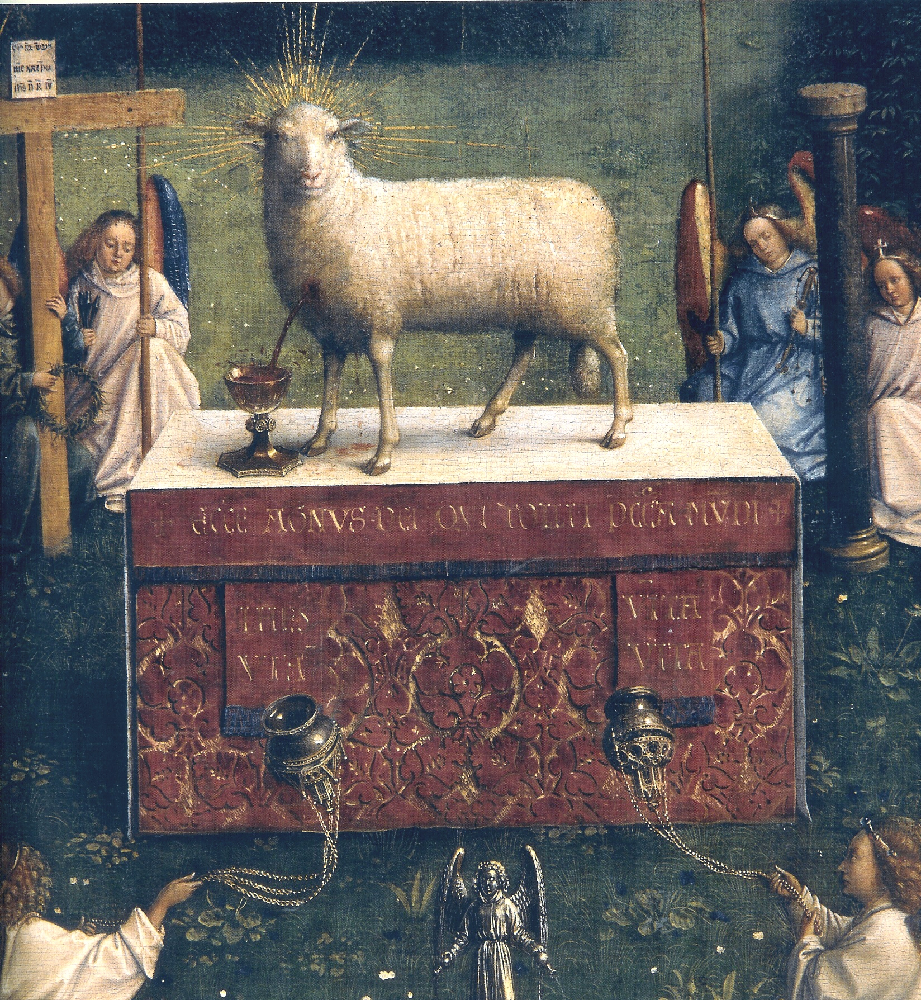
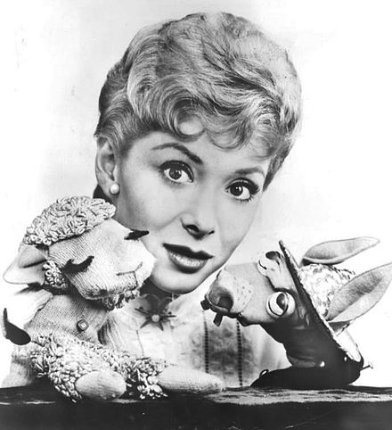

Dolly
Dolly (5 July 1996 – 14 February 2003) was a female Finn-Dorset sheep and the first mammal that was cloned from an adult somatic cell. She was cloned by associates of the Roslin Institute in Scotland, using the process of nuclear transfer from a cell taken from a mammary gland. Her cloning proved that a cloned organism could be produced from a mature cell from a specific body part. Contrary to popular belief, she was not the first animal to be cloned.
Dolly lived at the Roslin Institute throughout her life and produced several lambs. She was euthanized at the age of six years due to a progressive lung disease. No cause which linked the disease to her cloning was found. She has four identical clones named Daisy, Debbie, Dianna and Denise who, as of July 2016, were alive and healthy at nine years old.
She is named after Dolly Parton.
Ferdinand
Young Ferdinand does not enjoy butting heads with other young bulls, preferring instead to sit under a cork tree smelling the flowers. His mother is concerned that he might be lonely and tries to persuade him to play with the other calves, but when she sees that Ferdinand is content as he is, she leaves him alone.
Ferdinand grows to be the biggest bull in the herd and he often spends time alone. All the other bulls dream of being chosen to compete in the bullfights in Madrid, but Ferdinand still prefers smelling the flowers instead. One day, five men come to the pasture to choose a bull for the bullfights. Ferdinand is again on his own, sniffing flowers, when he accidentally sits on a bumblebee. Upon getting stung as a result, he runs wildly across the field, snorting and stamping. Mistaking Ferdinand for a mad and aggressive bull, the men dub him "Ferdinand the Fierce" and take him away to Madrid.
All of Madrid, including many women, turn out to see the handsome matador fight "Ferdinand the Fierce". When Ferdinand enters the bull ring, he is faced with the matador, banderilleros and picadors who panic when they see him. However, he is delighted by the flowers in the women's hair and sits down in the middle of the ring to smell them, upsetting and disappointing everyone and making the matador and other fighters throw tantrums. Ferdinand is then taken back to his pasture, where at the end he is still sitting under the cork tree happily smelling flowers.
Mister Ed
Mister Ed is an American television sitcom produced by Filmways that aired in syndication from January 5 to July 2, 1961, and then on CBS from October 1, 1961, to February 6, 1966. The show's title character is a talking horse which originally appeared in short stories by Walter R. Brooks.
Many of the program's gags follow from Mister Ed's tendency to talk only to Wilbur, his mysteriously well cultured essence, his rapscallion tendencies, and his precociously human-like behavior that far exceeds anything those around Wilbur expect of a horse. A running gag is other characters hearing Wilbur talking to Ed and asking to whom he is talking. Mister Ed's ability to talk was never explained and rarely contemplated on the show. In the first episode, when Wilbur expresses an inability to understand the situation, Mister Ed offers the show's only remark on the subject: "Don't try. It's bigger than both of us!"
Sacrificial Lamb
The sacrificial lamb is a metaphorical reference to a person or animal sacrificed for the common good. The term is derived from the traditions of the Abrahamic religions where a lamb is a highly valued possession.
In politics, a sacrificial lamb candidate is a candidate chosen to contest an election with little chance of victory. The political party thus appoints the person as a sort of "sacrifice" to the stronger opponent.
In cinema and literature, the term sacrificial lamb refers to a supporting character whose sole dramatic purpose is to die, thus galvanizing the protagonist to action and simultaneously demonstrating how evil the villain is. Very often, the sacrificial lamb is a family member, partner, or "old buddy" of the protagonist, with whom he or she has an assumed intimacy, thus requiring no real character development. The term is almost always used critically, with the implication that the character was used transparently as a plot device.
Shaun
Shaun is the leader of his flock, and the protagonist of the eponymous show about him. He is clever, confident, and prone to mischief, but equally adept at getting himself and/or his friends out of it. As there is no dialogue, like all the sheep, he communicates entirely through bleats and trills and often explains his ideas to the flock by drawing diagrams on a blackboard. He has a good friendship with Bitzer, though this does not stop him from playing pranks on him at times.
The animated show has 6 series, 170 episodes with more on the way in 2025, 36 shorts and 2 specials.
A Horse with No Name
The titular horse from the song by America. Now running free by the ocean.
Lamb Chop
Lamb Chop is a sock puppet anthropomorphic sheep created by puppeteer and ventriloquist Shari Lewis. The character first appeared during Lewis' guest appearance on Captain Kangaroo in March 1956 and later appeared on Hi Mom (1957–1959), a local morning show that aired on WRCA-TV in New York, New York.
Lamb Chop has been described as a "6-year-old girl, very intuitive and very feisty, a combination of obstinacy and vulnerability...you know how they say fools rush in where wise men fear to go? Well, Lamb Chop would rush in, then scream for help." Lamb Chop, in all her shows, had referred to her close friend, a girl named Lolly Pincus.